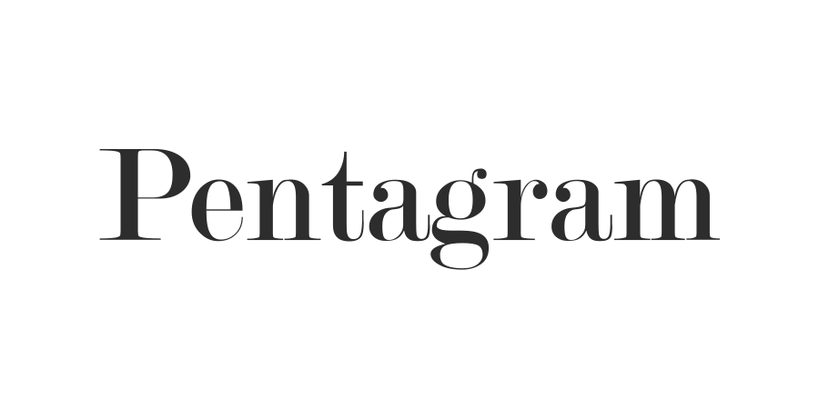
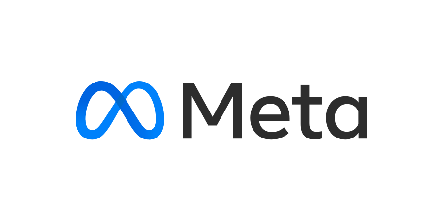
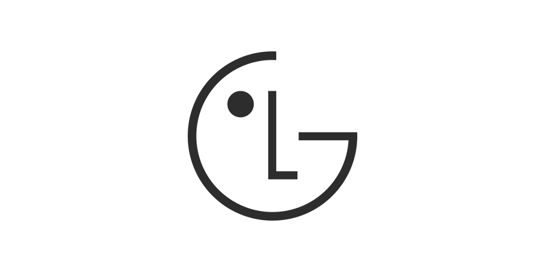
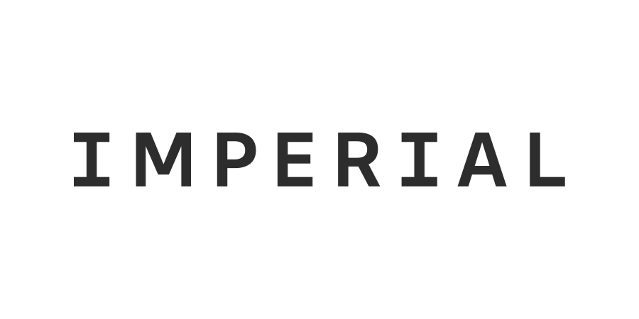
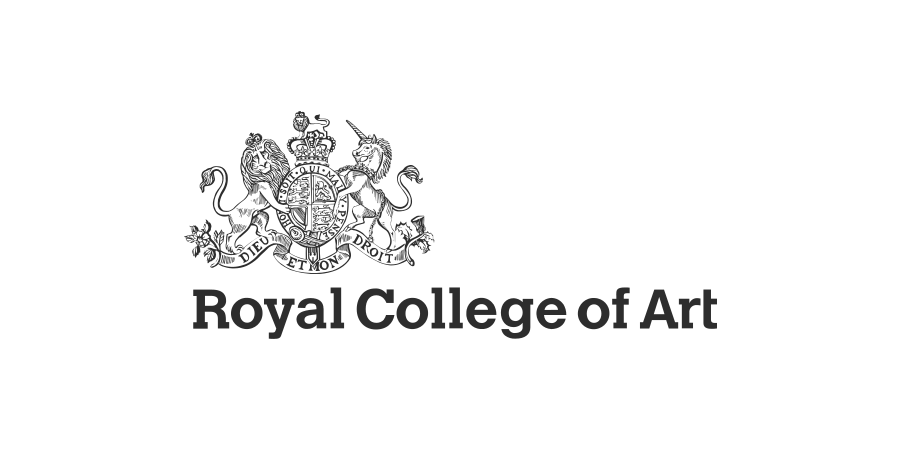
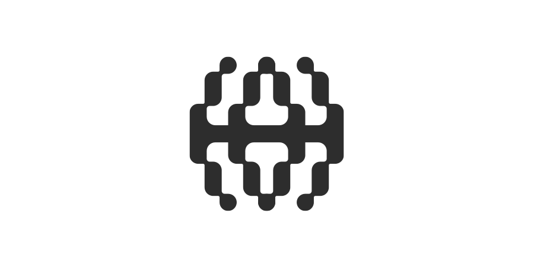
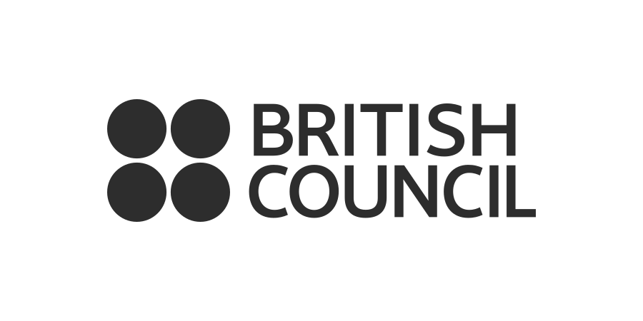
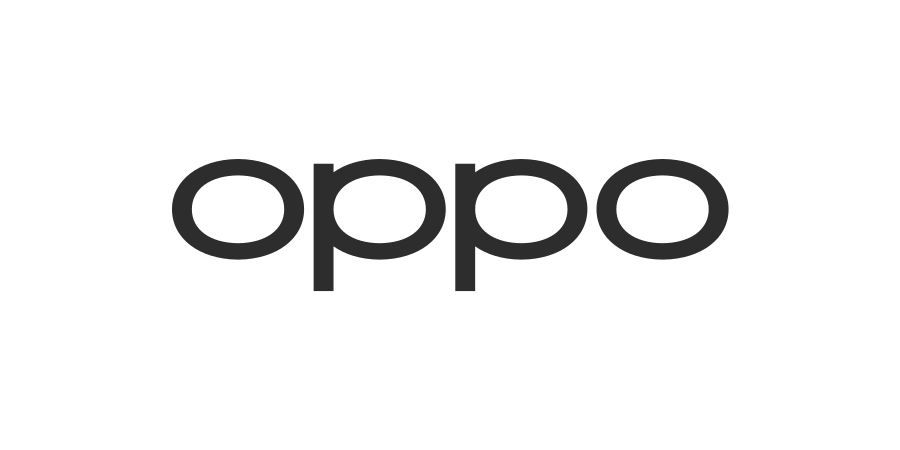
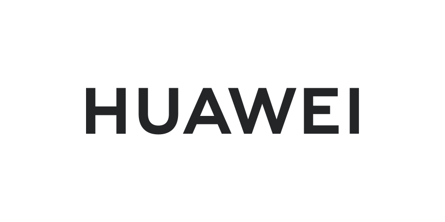
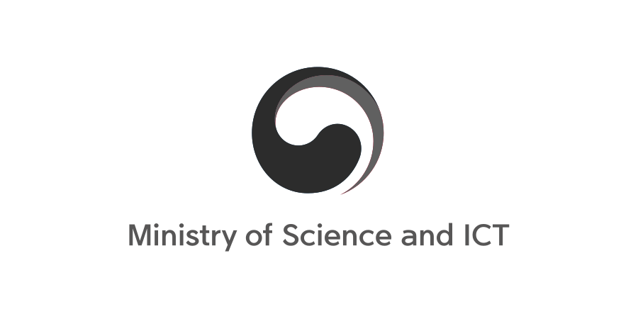

Chanwoo is an interface architect based in London. Co-designing human behaviour and technology to build computational tools for human agency.
He is visiting lecturer at Imperial College London and Royal College of Art, and founder of Lovelace Research. He holds MSc at Imperial College London and MA at the Royal College of Art in the field of Human-Centred AI, focusing on the future of human-computer relationships.
London & Seoul
Visiting Lecturer — Imperial College London & Royal College of Art
Research focus — Human-Centred AI, EmTech Interaction Design, Computational Media
Information Gardening · Digital Renaissance Manifesto
My work has been trusted by and collaborated with a diverse range of organizations.









